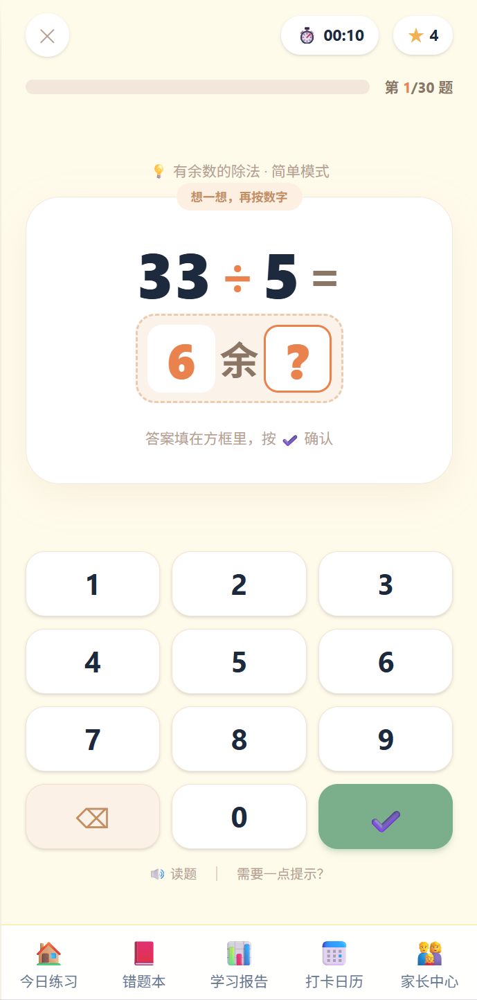
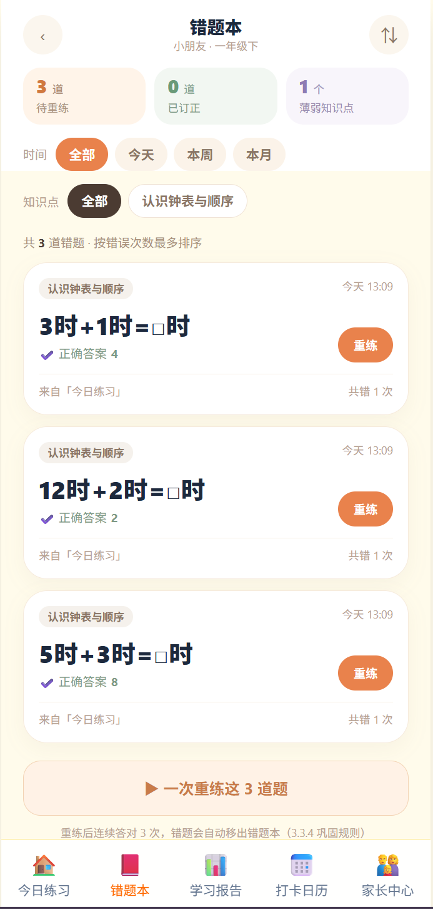
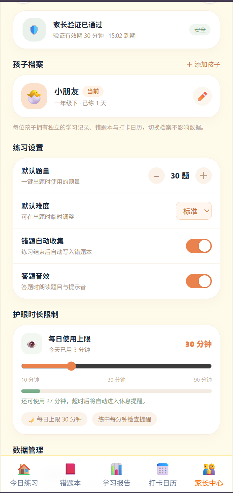

项目概述
口算天天练是面向小学1～3年级学生的在线口算练习网页应用，覆盖六个学期、25个核心口算知识点，包含加减法、表内乘除法专项训练。本项目为纯前端Web应用，不需要后端服务器，无需注册账号，电脑、平板、手机浏览器打开链接就可以直接使用。所有练习数据保存在浏览器本地，支持数据导出与导入，方便家长追踪孩子练习情况。
核心功能
智能出题 & 自动判分
按照年级、学期、知识点随机生成口算题，提交答案即时批改，对错即时反馈。
错题本巩固训练
答错题目自动收录，错题连续答对3次后自动标记为已掌握，减少重复刷题。
学习报告可视化
统计练习时长、正确率、完成题量，使用图表直观展示学习变化趋势。
PDF试卷导出
支持将题目导出为PDF，离线打印纸质试卷，脱离电子设备练习。
打卡与激励勋章
每日练习打卡，完成目标解锁勋章，提升孩子练习积极性。
家长中心管理
支持多学生档案切换，设置每日练习时长上限，保护用眼。
软件界面预览

口算练习答题页面

错题本巩固页面

学习报告趋势图表

家长中心管理页面
获取方式与使用说明（交叉评估入口）
评估同学请点击下方按钮，直接进入软件体验评估：
进入【口算天天练】软件📝 基础操作步骤
- 打开软件首页，选择对应年级、学期、练习知识点；
- 点击开始练习，在输入框填写答案，提交进行判分；
- 答错的题目会自动加入错题本，可进入错题模块专项复习；
- 练习结束后，可以查看本次练习的学习统计报告；
- 家长中心可以添加多个学生、设置每日练习时长、导出练习数据。
⚠️ 重要提示
- 本应用为网页程序，不需要下载、不需要安装、无需注册登录；
- 练习数据保存在当前浏览器本地，清理浏览器缓存会丢失记录，重要数据可以提前导出JSON备份；
- 支持电脑、平板、手机访问，页面自动适配不同屏幕大小。
📦 源码仓库地址
https://gitee.com/sunjian0323/rgkousuan源码仅供学习参考，项目使用 Vue3 + Vite 开发
项目技术说明
Vue3
Vite
LocalStorage
Canvas图表
PDF导出
纯前端SPA
项目为单页Web应用，采用组件化开发，所有业务逻辑在前端完成，不依赖后端接口。打包后为静态文件，通过Gitee Pages进行托管发布，满足课程线上评估要求。
问题反馈
如果在评估、使用过程中发现bug、功能异常或者改进建议，可以前往Gitee仓库提交Issue反馈。本页面将持续在线至少一个月，用于课程检查和交叉评估。